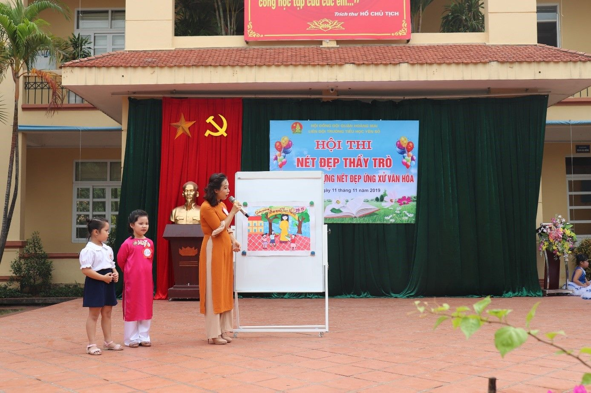

TRƯỜNG TIỂU HỌC YÊN SỞ TỔ CHỨC CUỘC THI "NÉT ĐẸP THẦY TRÒ"
Hoà chung trong không khí tưng bừng, phấn khởi chào mừng 37 năm ngày Nhà giáo Việt Nam, 65 năm thành lập ngành GDĐT Hà Nội, sáng ngày 11/11/2019, trường Tiểu học Yên Sở long trọng tổ chức Hội thi “Nét đẹp thầy trò”. Đây là một sân chơi vô cùng bổ ích cho giáo viên và học sinh. Thông qua hội thi, giáo dục cho học sinh về truyền thống “tôn sư trọng đạo” và đạo lí “uống nước nhớ nguồn” của dân tộc. Bên cạnh đó, hoạt động này còn nhằm hưởng ứng phong trào “Xây dựng trường học thân thiện, học sinh tích cực” của ngành giáo dục; tạo sân chơi lành mạnh và bổ ích cho giáo viên và học sinh được rèn luyện, nâng cao và phát huy tài năng, năng khiếu của mình.
Đến dự hội thi có ông Cao Văn Quyết – Trưởng Ban đại diện Cha mẹ học sinh nhà trường, Ban giám hiệu cùng toàn thể các thầy cô giáo và các bạn học sinh trường Tiểu học Yên Sở.
Hội thi hôm nay là phần đua tài của 5 đội thi, những cô giáo tài năng, duyên dáng và học sinh đại diện cho các khối 1,2,3,4,5. Các đội thi sẽ trải qua 2 phần thi, đó là các phần: Trang phục tự chọn, trang phục nghề nghiệp và Thi năng khiếu.
Mở đầu là phần thi Trang phục tự chọn, trang phục nghề nghiệp với sự xuất hiện duyên dáng, uyển chuyển của các cô giáo đến từ các đội thi trong tà áo dài thướt tha và bước chân tự tin trên sân khấu như những người mẫu chuyên nghiệp của các em học sinh trong trang phục tiếp viên hàng không, hướng dẫn viên du lịch, nhà ngoại giao,... Mỗi phần thi đều nhận được những tràng pháo tay cổ vũ nhiệt tình của các thầy cô và các em học sinh. Học sinh toàn trường chờ đón các tiết mục với sự háo hức và mong muốn đội của khối mình sẽ giành chiến thắng.
Phần thi tài năng được bắt đầu bằng tiếng hát du dương của cô giáo Dương Thu Trang và học sinh Nguyễn Bình An mang số báo danh 01 với bài hát “Những điều thầy chưa kể” đã khiến cho học sinh toàn trường xúc động. Số báo danh 02, cô giáo Nguyễn Thị Mỹ Hường và học sinh Nguyễn Bảo An với bài múa dân gian “Quê tôi”. Bài múa với giai điệu ngọt ngào, thắm tình quê hương đã thu hút được toàn trường hòa nhịp theo điệu múa. Cô giáo Cao Thị Thanh Thủy và học sinh khối 1 mang số báo danh 04 đem đến hội thi tài năng xé dán tranh ấn tượng và phần thuyết trình vô cùng tự tin. Với bàn tay khéo léo của mình, cô đã đem đến một bức tranh xé dán vô cùng ý nghĩa với thông điệp “Tri ân các thầy cô giáo” nhân kỉ niệm ngày Nhà giáo Việt Nam. Tiếp theo, số báo danh 03 là cô giáo Nguyễn Thị Nga và học sinh Lê Thùy Lâm khối 3 mang đến Hội thi với tiết mục múa “Người giáo viên nhân dân” vô cùng ấn tượng như muốn nhắn nhủ đến các em học sinh hãy luôn lắng nghe ghi nhớ lời thầy cô dạy dỗ và hãy ghi nhớ công lao của thầy cô đã không quản ngại khó khăn vất vả để mang những tri thức rộng lớn bao la đến cho các em. Phần thể hiện số báo danh 05 của cô giáo Nguyễn Thu Ngọc Anh và học sinh khối 2 với tiết mục múa “Cô giáo về bản” đã khép lại phần thi năng khiếu trong Hội thi “Nét đẹp thầy trò”.
Kết thúc hai phần thi, Ban giám khảo đã chọn ra một Giải Xuất sắc thuộc về cô giáo Nguyễn Thị Mỹ Hường cùng các bạn học sinh khối 4, giải Nhất thuộc về cô giáo Nguyễn Thị Nga cùng em học sinh khối 3, giải Nhì thuộc về cô giáo Nguyễn Thu Ngọc Anh đến từ khối 2 và hai giải Ba thuộc về cô giáo Cao Thị Thanh Thủy và cô giáo Dương Thu Trang. Hội thi đã thể hiện được tài năng của các cô giáo. Không chỉ dạy giỏi các cô còn vô cùng tài năng trong múa hát, thiết kế trang phục, là những bông hoa đẹp, tấm gương mẫu mực cho học sinh noi theo.
Hội thi “Nét đẹp thầy trò” khép lại nhưng đã góp phần tôn lên tình cảm thắm thiết giữa thầy-trò. Đây là một trong chuỗi các hoạt động thể hiện sự tri ân tới những kĩ sư tâm hồn, những người đang ngày ngày cần mẫn, hết lòng vì học sinh thân yêu đồng thời khích lệ các thầy cô giáo tiếp tục phấn đấu để cống hiến cho sự nghiệp trồng người.
Dưới đây là một số hình ảnh trong hội thi:
Phần thi tài năng của cô giáo Nguyễn Thị Mỹ Hường
Phần thi tài năng của cô giáo Nguyễn Thị Nga
Phần thi tài năng của cô giáo Nguyễn Thu Ngọc Anh

Phần thi tài năng của cô giáo Cao Thị Thanh Thủy
Phần thi tài năng của cô giáo Dương Thu Trang
Cô giáo Hiệu trưởng Nguyễn Thị Hồng trao giải cho các đội thi